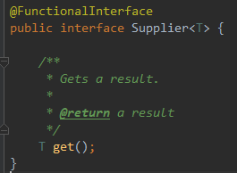
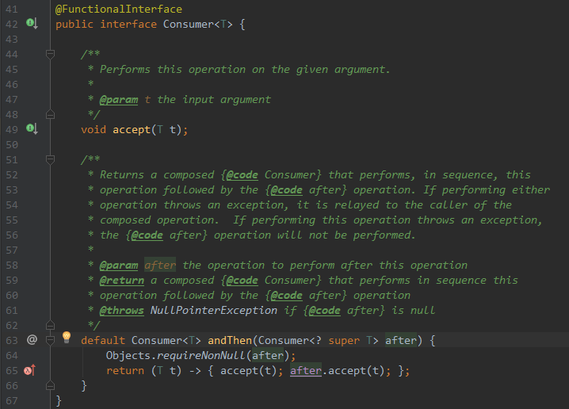

前几天一位好友分享了一篇文章，其中讲到了lambda表达式，正好最近看了一些内容，就做做笔记吧...
lambda表达式服务于函数式接口，如果需要一个函数式接口的对象时，就可以用lambda表达式代替
什么是函数式接口？
1.最主要的一点是只包含一个抽象方法的接口(Object类的方法不算啊)
2.带有@FunctionalInterface注解的一定是函数式接口，但是不代表没有该注解就表示不是，只要是一个接口，有且只有一个抽象方法，那么就是函数式接口，注解配合编译器可以很好的辅助，我们在自定义函数式接口的时候，也会更加直观，有助于代码的可读性
几个简单的例子
Arrays.sort方法需要一个实现了Comparator接口的实例，正常情况下，我们需要创建一个实例，然后实现Comparator接口，然后将该实例传入Arrays.sort方法中，还是比较繁琐的，但是使用lambda表达式就可以非常简化
编译器如果能推导出参数类型，小括号中的参数类型是可以省略的
String[] array = new String[3];
array[0] = "ccc";
array[1] = "bb";
array[2] = "a";
System.out.println(array[0]);// 输出ccc
Arrays.sort(array, (first, second) -> first.length() - second.length());
System.out.println(array[0]);// 输出a对于逻辑比较复杂的代码，逻辑处理部分可以使用{}包起来
Timer t = new Timer(1000, event -> {
System.out.println("action");
System.out.println("listener");
});
t.start();表达式也是可以当作一个参数传递的
String[] array = new String[3];
array[0] = "ccc";
array[1] = "bb";
array[2] = "a";
System.out.println(array[0]);
Comparator<String> comp = (first, second) -> first.length() - second.length();
Arrays.sort(array, comp);
System.out.println(array[0]);如果没有入参的时候，小括号不能省略
Thread thread = new Thread(() -> {
for (int i = 0; i < 100; i++) {
System.out.println(i);
}
});
thread.start();现在工作主要是用Scala语言，Scala在语法等方面对比Java来讲更加函数化，遍历、排序、过滤等操作甚至来讲只用一行代码就可以完成
但是lambda作为Java8的一个大更新，所以还是有必要学习一下新特性的
下面新增一些关于Supplier和Consumer的知识
Supplier也是一个函数式接口，这个接口只有一个返回泛型T的方法

因此如果我们想要得到某个实例，就可以使用这个函数式接口了比如
// 这个实体有两个构造，一个有参，一个无参
Supplier<LengthComparator> lcp1 = () -> new LengthComparator("a", "b");
// 直接使用构造方法引用，编译器会自动帮我们引用到无参上面去，但是如果我们把无参给注释掉，这里就会报错了
Supplier<LengthComparator> lcp2 = LengthComparator::new;
System.out.println(lcp1.get()); // 打印这个对象的地址
Supplier<String> str = () -> "hello";
System.out.println(str.get()); // 打印hello
Consumer也是一个函数式接口，其中有两个方法：
一个方法是传个泛型参数，没有返回值；
还有一个是链式方法；

/**
* void accept(T t);
*/
Consumer<String> sss = (x) -> System.out.println("x = " + x);
sss.accept("hello"); // x = hello
/**
* default Consumer<T> andThen(Consumer<? super T> after)
*/
Consumer<String> ssss = (x) -> System.out.println(x);
ssss.andThen(sss); // 没有任何输出
ssss.andThen(sss).accept("world"); // 先执行ssss的accept方法，再执行sss的accept方法；由上我们可以看出，Consumer这个接口对于批量操作数据非常的方便，比如有一批数据，需要经过多种逻辑运算，就可以链式使用，这个非常类似于Scala的函数式编程风格，比如list.map(x => x.name).filter(name => name.equals("xxx"))
需要注意的是，链式玩法中，Consumer的泛型必须都是统一类型，因为accept参数需要被多次用到，如果类型不一致，编译报错；